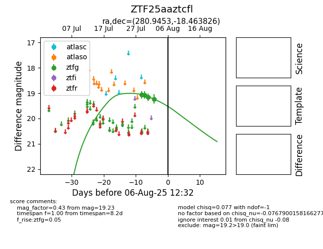

Target ZTF25aaztcfl at 2025-08-06 17:07, see:
FINK: fink-portal.org/ZTF25aaztcfl
Lasair: lasair-ztf.lsst.ac.uk/objects/ZTF25aaztcfl
ALeRCE: alerce.online/object/ZTF25aaztcfl
alt names
ZTF25aaztcfl (ztf,fink)
coordinates:
equatorial (ra, dec) = (280.9453,-18.46383)
galactic (l, b) = (15.5744,-6.67375)
photometry
last ztfg=19.23
4 ztfg detections
